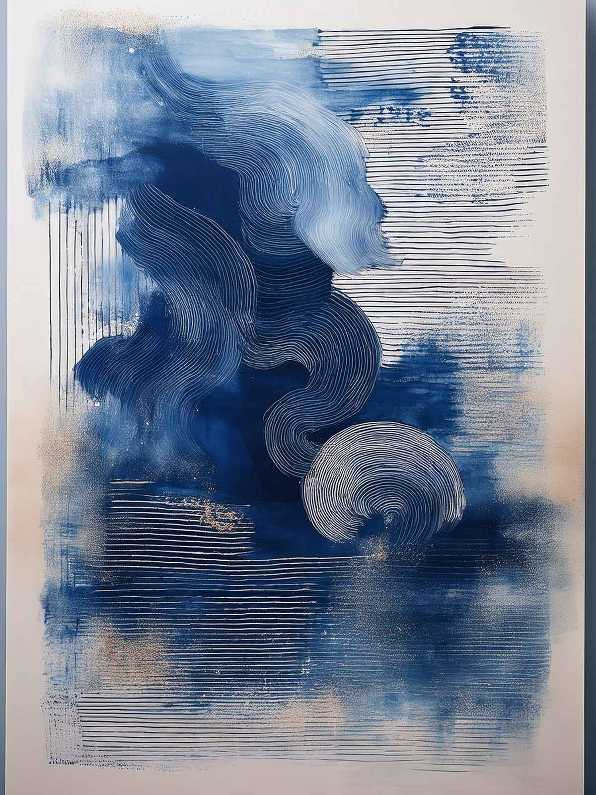

Ficha pública de obra
Memoria del taller
Capas de textura y registros parciales que documentan procesos de taller.

Navegación
Volver al catálogo
Esta ficha valida el flujo central de consulta pública: explorar el catálogo, abrir una obra y regresar al listado general.